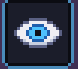
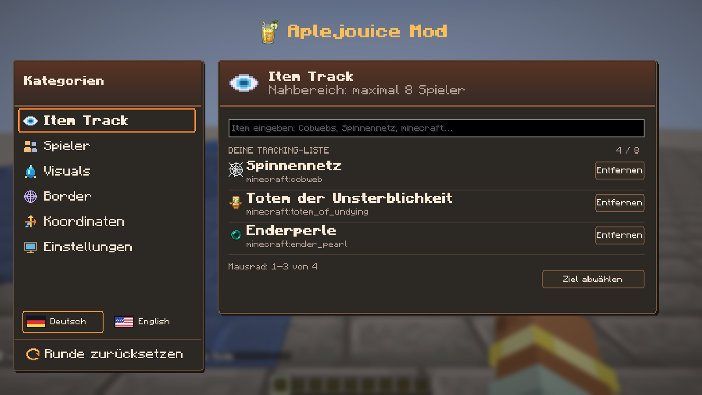
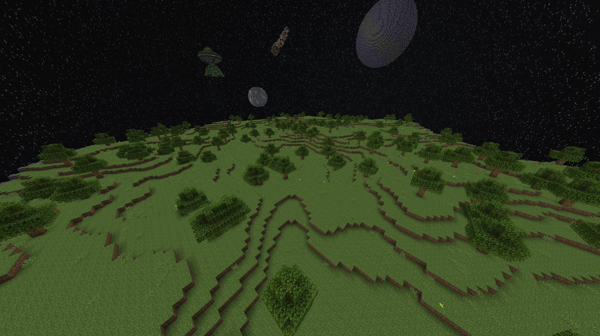

Deine Watchlist.
Suche Items nach Namen oder ID und füge bis zu acht zur Liste hinzu. Webs, Totems, Enderperlen und End-Crystals sind mit dabei.
Bis zu 8 Item-TypenWebs, Totems, Enderperlen und End-Crystals: Die Aplejouice Mod zeigt erfasste Nutzungen als Zähler über Spielern an.
Mit J öffnen · Deutsch & Englisch · Open Source

KLEINE MOD. KLARER FOKUS.
Deine Items, dein Gegner, deine Anzeige.
Stell genau das ein, was du im Kampf sehen willst.

Suche Items nach Namen oder ID und füge bis zu acht zur Liste hinzu. Webs, Totems, Enderperlen und End-Crystals sind mit dabei.
Bis zu 8 Item-TypenWähle einen geladenen Spieler aus der Liste oder greife ihn an. Im Gegner-Modus zählt nur dein ausgewähltes Ziel.
Auswählen oder angreifenBehalte nahe Spieler im Blick oder fokussiere einen Gegner. Nullwerte und Reichweite stellst du selbst ein.
Bis zu 8 nahe Spieler · max. 64 mPROBIER'S AUS
So liest sich das Tracking: Item nutzen, Zähler sehen. Klicke auf ein Item und teste die Anzeige in dieser Website-Demo.
Illustrative Demo. Im Spiel hängen die Zähler von den empfangenen Server-Ereignissen ab.
Wie genau ist das Tracking? ↗Bis zu acht Item-Typen verfolgen: Webs, Totems, Enderperlen und Crystals. Die erfassten Nutzungen stehen direkt über dem Spieler.
KOORDINATEN AUSPROBIEREN
Website-Demo mit Beispielwerten. Negative Koordinaten werden korrekt abgerundet.
HUGO SMP DUEL END BORDER
Drei vermessene Arenen. Wähle deine Vorschau.

Plains
Y 37 — 54
Map-Bilder aus dem Spiel. Die Border ist eine visuelle Annäherung an die gemessenen Punkte.
AUCH DRUMHERUM GEDACHT
Beim ersten Ingame-Start zeigt eine kompakte Karte deinen aktuellen Menü-Keybind mit winkendem Skin. Sie bleibt bis zum Öffnen der Mod und lässt sich in den Einstellungen erneut anzeigen.
Tutorial in Einstellungen ↗Beim Start prüft die Mod im Hintergrund, ob eine neue kompatible Version bereitsteht. Du entscheidest, wann du sie herunterlädst. Keine automatische Installation.
Aktuelle Version ansehen ↗BEREIT FÜR DIE NÄCHSTE RUNDE?
Für Minecraft Java 1.21.11.
Mit Fabric Loader ≥ 0.18.4, Fabric API und Java 21.
Die aktuelle Version findest du auf unserer Downloadseite.
Installiere Fabric Loader ↗ für 1.21.11 und die passende Fabric API ↗.
Lege die Aplejouice-Mod-JAR zusammen mit Fabric API in den mods-Ordner deiner Spielinstanz.
Aktiviere Tracking im Menü und füge Items hinzu. Im Gegner-Modus wählst du zusätzlich einen Spieler aus.
NOCH KURZ
Die Mod erfasst das, was dein Client vom Server mitbekommt. Totem-Pops und Perlen nutzen Server-Ereignisse. Bei Webs und Crystals wird der Platzierer aus gehaltenem Item, Reichweite und Blickrichtung abgeleitet. Ist die Zuordnung mehrdeutig, kann eine Nutzung fehlen. Die Zahlen sind keine garantiert vollständige Server-Statistik.
Für das clientseitige Beobachten nicht. Optional kann dieselbe JAR auf einem Fabric-Server Vanilla-ITEM_USED-Statistiken an passende Clients senden.
Ja. Einstellungen und Item-Liste bleiben beim Serverwechsel und Neustart gespeichert. Ziele und Rundenzähler werden beim Serverwechsel zurückgesetzt; im Gegner-Modus wählst du dann erneut einen Spieler aus.
Aktuell Minecraft Java 1.21.11 mit Fabric. Neuere Versionen benötigen eine eigene Anpassung und sind nicht automatisch kompatibel. Die Taste J lässt sich in der Minecraft-Steuerung umbelegen.
Ja, unter der MIT-Lizenz. Auf GitHub kannst du den Code ansehen und Fehler melden. Ein Großteil des Codes sowie UI-Texte und gezeichnete Pixel-Icons sind mit OpenAI Codex entstanden. Die Mod selbst nutzt keine KI zur Laufzeit.